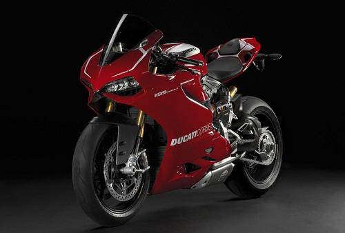

Harga Motor Ducati Superbike
Nov 7, 2017Penggemar ajang balap superbike dan moto gp pasti tak meragukan kehebatan motor spot yang dimiliki Ducati. Anda bisa membeli salah satu motor berteknologi motor balap tersebut dengan membeli seri Ducati Superbike. Harga Motor Ducati Superbike termurah di Indonesia dibanderol dengan harga 380 Jutaan untuk tipe Ducati Superbike 848 Evo.
Bagi anda yang tak puas dengan peforma 848 Evo bisa membeli Ducati Superbike 1199 Panigle R dengan harga sekitar 700 Juta Rupiah, dan motor tersebut merupakan motor Ducati termahal di Indonesia. Motor ini sangat pantas dihargai mahal, karena di dalamnya sudah terdapat teknologi motor balap yang sap memuaskan hasrat berkendara dengan kecepatan lebih dari 200 km/jam.